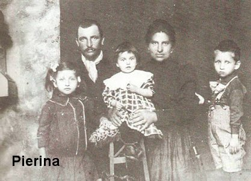
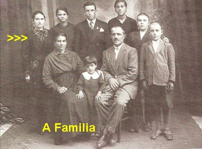
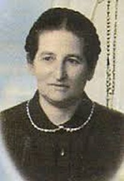
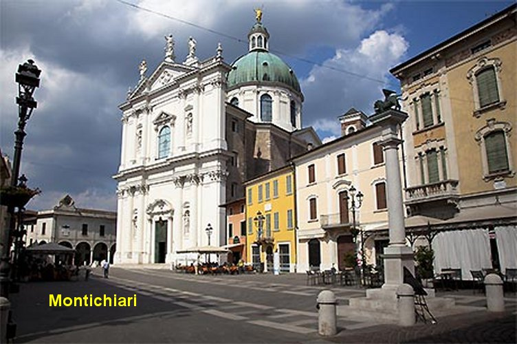

OS PAIS
E OS PROBLEMAS
FAMÍLIA RESPONSÁVEL
Pierina Gilli era filha de
camponeses, nascida na Itália, no vilarejo de São Jorge, pertencente à
Montichiari, próximo a Brescia. Nasceu no dia 3 de agosto de 1911 e 
Teve uma infância com muitos sofrimentos, ligados a pobreza e dificuldades da própria família, que ganhava pouco para criar muitos filhos. E por isso também as doenças nunca eram cuidadas com a exigência necessária, e este procedimento ajudava a enfraquecer a sua estrutura física, ao longo do crescimento existencial.
A morte do seu pai no final da Primeira Grande Guerra Mundial ocasionou além da grande tristeza na família, um irreparável desajuste no controle familiar. Ele que voltou para ser a natural alegria da esposa e dos filhos, chegou doente e cansado. Foi internado no Hospital em Montichiari e não resistiu, morrendo pouco tempo depois. Dos três irmãos que havia naquela época, ela era a mais velha com apenas sete anos de idade.
Em consequência desta realidade, para diminuir a despesa no lar, no período de 1918 a 1922, Pierina foi viver num Orfanato de Irmãs de Caridade, oportunidade em que começou a estudar o Catecismo e também recebeu a Primeira Eucaristia.
Em fins de 1922, com 11 anos de idade, voltou para junto da sua família, atendendo ao chamado da mãe, que havia se casado pela segunda vez e necessitava da ajuda da filha, para cuidar dos seus irmãos menores.
INVESTIDA COVARDE
No ano seguinte, a situação financeira da família ainda não estava bem. Na verdade, eles passavam necessidades, porque a renda do trabalho era muito pequena. E por essa razão, mudaram de casa, foram morar num casebre, dividindo o espaço daquele pequeno lar com outra família. Mas, aconteceu um grave imprevisto: o marido da outra família era uma pessoa de pouca educação e de moral muito baixa. Maldosamente arquitetou planos contra Pierina, que teve sua pureza virginal ameaçada seriamente e foi salva e socorrida pela graça de DEUS. Como consequência lógica, imediatamente sua família reuniu o pouco que tinha e mudou para outro local completamente distante.
NA CRECHE MUNICIPAL

Acontece que um funcionário da Prefeitura, um rapaz trabalhador que periodicamente providenciava o abastecimento da creche, começou a olhar muito para ela. Ela meio embaraçada, conversou com o seu Confessor e lhe contou que o rapaz queria se casar com ela. O Confessor, um Padre experiente, procurou colher informações sobre o rapaz e numa oportunidade que Pierina voltou a procurá-lo, ele encorajou a moça, dizendo que o rapaz era pessoa digna, dedicado ao trabalho e de boa família. Mas Pierina permaneceu em dúvida, por que intimamente tinha o desejo de seguir a vida religiosa. Inclusive já havia feito contatos com uma Ordem e aguardava um chamado. Então, apesar do consentimento do seu Confessor, foram dois meses difíceis que ela passou, atravessando uma grande crise interior. Mas, com esforço, conseguiu vencer esta etapa e foi confirmada na sua vocação religiosa, pelo próprio Confessor.
EM BUSCA DE EMPREGO
Desse modo, aos 20 anos de
idade, estava prestes a realizar o seu ideal de ser aceita como Postulante das
Servas da Caridade, quando teve um sério problema de saúde: foi atingida por uma
pneumonia, que a colocou durante longos meses em tratamento e numa necessária
convalescença. Quando ficou curada, não tinha 
Mas ela tinha que trabalhar, era preciso procurar um serviço que lhe fosse mais adequado. Fazendo contato com pessoas conhecidas da Igreja, arranjou um trabalho em Carpenedolo, mais condizente com as suas condições físicas atuais, como empregada doméstica do Padre José Brochini, cuja mãe tinha 80 anos de idade e era cega. Com muita dedicação e competência, ela ajudou à senhora mãe do Sacerdote, permanecendo neste emprego de 1931 a 1937, quando completou 26 anos de idade. Foi para ela um tempo bastante agradável, em que viveu com muita serenidade ao lado do sacerdote e sua mãe anciã, tendo oportunidade de ler livros edificantes e desenvolver os seus conhecimentos religiosos, de meditar sobre passagens evangélicas e rezar com disponibilidade e devoção.
Com a morte da mãe do sacerdote, ela se despediu para seguir a sua vocação religiosa. Entretanto, Pierina ainda não conseguiu, em virtude da sua frágil saúde. E por isso, compreendeu que devia buscar outro serviço de empregada doméstica. E desse modo, novamente buscou se informar junto às pessoas que conhecia, e felizmente logo arranjou um serviço na cidade de Brescia, na Clínica Villa Blanca, com as Irmãs da Caridade de Santa Antida Thouret. Acontece que a vaga existente na Clínica era para serviços na área reservada aos homens. Com muita educação ela se despediu afirmando não ser apta para aquele serviço.
ENFERMEIRA NO HOSPITAL
Ao deixar a Clínica, soube que havia uma vaga no Hospital Civil de Desenzano do Garda. Para lá ela se dirigiu e conseguiu ser aceita como enfermeira, para prestar serviços as Servas da Caridade. Neste Hospital permaneceu quatro anos, durante a Segunda Grande Guerra Mundial. Também foi um período bom e muito proveitoso, no qual desenvolveu os seus conhecimentos hospitalares e pode também crescer espiritualmente, com muitas leituras e orações.
PRIMEIRO PERÍODO DAS APARIÇÕES (1944-1949)
No dia 2 de Abril de 1944, ela deixou o Hospital e finalmente, no dia 14 de Abril, entrou no Convento como Postulante das Servas da Caridade. Depois de devidamente instruída, foi enviada como enfermeira para o Hospital das Crianças, que pertencia à mesma Ordem Religiosa, na cidade de Brescia.
GRAVES DOENÇAS

Na noite do dia 17 de Dezembro de 1944, apareceu-lhe Santa Maria Crucificada Di Rosa, uma Santa da sua amizade e devoção, que lhe passou uma pomada na testa e nas costas, curando-a pela Santíssima Vontade do SENHOR.
Totalmente recuperada, no mês de Julho de 1945, voltou ao serviço em Desenzano do Garda. Mas quando chegou o mês de Dezembro, a doença voltou. Suspeitaram que fosse meningite, otite e cálculo renal, e por este motivo, decidiram levá-la para o Hospital de Montichiari que tinha muito mais recursos.
Continuou com o tratamento de modo sério e permanente durante quase um ano, o que lhe propiciou a recuperação da saúde em Abril de 1946, e com alegria, pode voltar a exercer a função de enfermeira no Hospital.
A verdade, todavia, era que a saúde de Pierina não estava bem, a sua defesa orgânica era muito frágil, em razão de um crescimento pobre e difícil, que nunca lhe ofereceu a oportunidade de ter uma existência forte e saudável.
Tanto é assim, que mal recomeçou a trabalhar, logo na metade de Novembro de 1946 surgiu outro problema estranho: fortíssimas dores e vômitos, que aparentemente eram sintomas característicos de oclusão intestinal, exigindo uma urgente intervenção cirúrgica.
Na noite do dia 23 para o dia 24 de Novembro apareceu-lhe novamente Santa Maria Crucificada Di Rosa, e desta vez, acompanhada de NOSSA SENHORA que trazia três espadas LHE transpassando o peito. Foi uma visita rápida e silenciosa, com a finalidade de lhe infundir coragem e esperança, mostrando-lhe que o SENHOR DEUS acompanhava os seus passos.
No ano seguinte, Pierina sofreu cólicas renais fortíssimas e cistite muito dolorosa, além de um colapso cardíaco. O problema se agravou e no dia 12/Março/1947 entrou em coma. Todavia foi curada milagrosamente pela Vontade Divina e intercessão da sua amiga, Santa Maria Crucificada Di Rosa.
O DEMÔNIO ATACA
No princípio do mês de Maio, satanás invejoso do seu notável progresso religioso, assim como do seu precioso carinho devocional, mostrando-se cada vez mais apaixonada por NOSSO SENHOR e pela VIRGEM MARIA, iniciou uma terrível ofensiva diabólica contra ela, com uma cruel e sistemática perseguição. Pierina, seguindo as orientações do seu Confessor e da Superiora da Comunidade Religiosa, assim como também confortada pelas Aparições da Santa Maria Crucificada Di Rosa, construiu o seu baluarte de defesa dormindo no chão, em cima de um cobertor e fazendo jejum três dias na semana, se alimentando nestes dias somente com pão e água, rezando fervorosamente o Terço e as Orações que lhe foram indicadas. As perseguições duraram um mês e Pierina resistiu bravamente, fazendo com que satanás desaparecesse da sua frente.
No final da perseguição demoníaca, quando terminava a Primavera do ano 1947, e mais precisamente no dia 1º de Junho, o SENHOR DEUS determinou que Santa Maria Crucificada Di Rosa lhe mostrasse o inferno e o incalculável sofrimento daqueles que lá se encontram, com terríveis gritos de dor e proferindo súplicas, queixas e xingamentos. Pierina ficou impressionada.
Sem dúvida, o SENHOR permitiu todo aquele ataque demoníaco, para fortalecer a vontade dela, deixando-a firmemente consciente do poder do maligno e das suas abomináveis tramas.